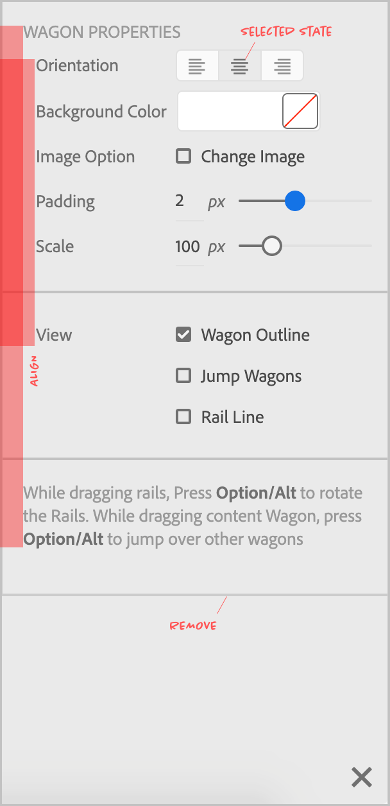
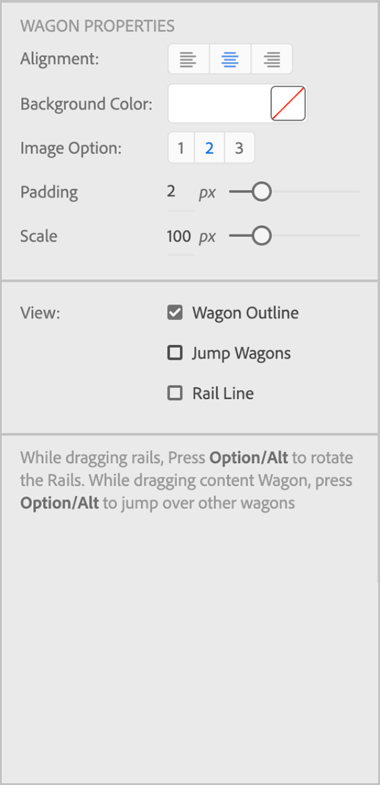

Prototyping Stories
- Design Segment 6yrs
- Fireworks, Dreamweaver
- Seed Projects
- Liquid Pixel
- Device Preview

Liquid Pixel
Web-based Vector Drawing Tool
Device Preview
Test across Multiple Devices/BrowsersExperience Developer
since 2016
Sh*t Designers Say
"Visual hierarchy is off"
"Alignment sahi nahi hai"
"Optical alignment is off"
"Move it up by 1px"
"Doesn't look balanced"

X

Y

Z
"This needs to be more fluid"
"It needs to be more organic"
"I need to feel it out"
"Feel nahi aa rahi hai"
A note about prototyping

L1: Discovery

L2: Exploration

L3: Design

L4: Prototype*

L5: Test & Refine
Why Prototype?
Adobe Design
- Ideas are vague
- Explore multiple options
- Ideas need evaluation
- Ideas when dynamic are more impactful
Demos
1. Illustrator Text Explorations
Test Mouse/Touch Interactions
2. Illustrator Global Edit
Test Multiple Workflows
3. Illustrator Path Simplification
UI Element- Heads up Display(HUD)
Prototype What?
Adobe Design
- Tool behavior
- Comparison between options
- Functionality/workflow of a component/feature
- Mouse interactions/Direct manipulation
- Animation/Timing
- Visibility/Legibility
Adobe Design
We are building a- paper |
- click-through |
- functional |
- Engineering
- UI Element |
- Tool behavior |
- an animation
- vague |
- multiple options